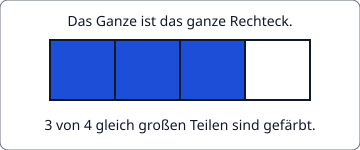
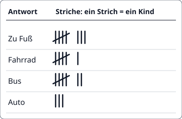
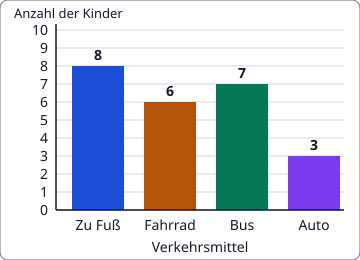
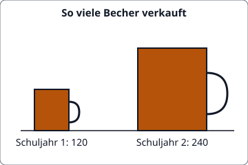
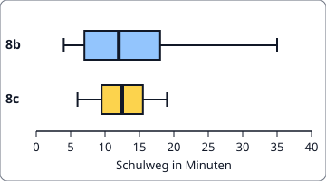

Medienübersicht
Alle Bilder, Audios und Videos dieser App mit ihrer Quelle und ihrer Lizenz.
Bilder

images/zahlenstrahl-0-10.svg© CC-BY-4.0Verwendet auf: Das brauchst du für dieses Kapitel

images/rechteck-drei-viertel.svg© CC-BY-4.0Verwendet auf: Das brauchst du für dieses Kapitel

images/strichliste-6a.svg© CC-BY-4.0Verwendet auf: Unsere Umfrage – Daten darstellen

images/saeulen-6a.svg© CC-BY-4.0Verwendet auf: Unsere Umfrage – Daten darstellen

images/kreis-6a.svg© CC-BY-4.0Verwendet auf: Wie oft kommt was vor?

images/becher-werbung.svg© CC-BY-4.0Verwendet auf: Wie Diagramme täuschen können

images/saeulen-abgeschnitten.svg© CC-BY-4.0Verwendet auf: Wie Diagramme täuschen können

images/boxplot-8b-8c.svg© CC-BY-4.0Verwendet auf: Boxplot – zwei Klassen im Vergleich

images/boxplot-8b-erklaert.svg© CC-BY-4.0Verwendet auf: Boxplot – zwei Klassen im Vergleich